What this domain really tests
Every other domain asks what you would build. D6 asks how you would run the whole engagement: discovery, decision, documentation, handoff, monitoring, iteration. The questions follow real scenarios. You will read a situation with stakeholders, constraints, and a disagreement, and pick the move a senior architect makes.
How D6 questions are built
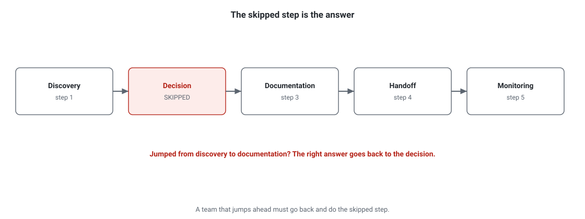
- Follow the arrows left to right.
- The red step is the one the team skipped.
- Takeaway: the right answer goes back and does it.
The exam loves three shapes here:
- The skipped step. A team jumped to model selection before discovery, or to handoff before evals. The right answer goes back and does the skipped step.
- The dishonest promise. Someone promised 100% accuracy, or signed an SLA with no measurement plan. The right answer restates the promise in honest, measurable terms.
- The missing owner. Quality drifted and nobody noticed. The right answer names an owner, a metric, and a cadence.
Read every D6 item constraint-first: who are the stakeholders, what did they actually agree to, what the item measures, and who owns it. The distractor almost always sounds technically clever but ignores one of those four.
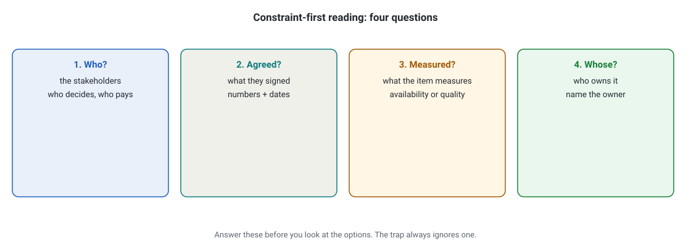
- Each panel asks one question.
- Answer all four before you read the options.
- Takeaway: the trap option always ignores one.
Unit 1. Who the stakeholders are
Every project has people who can change its fate. Name them before you design anything.
What it is
Rung 1: the one-paragraph version. A stakeholder is anyone who can affect the project or feels its effects. That includes the person who funds it and the person who uses it. It also includes the person who can block it and the person who inherits it at 3am. Six types show up in almost every AI engagement.
The executive sponsor funds the work and can kill it; they care about cost, risk, and business outcome. The product owner defines what "done" means day to day; they care about shipped value and the backlog. End users live with the system daily; they care about speed, accuracy, and whether it respects their workflow. Legal and compliance guard against lawsuits and regulatory trouble; they care about risk, data handling, and audit trails. The engineering team builds and operates the system; they care about feasibility, clarity of requirements, and on-call load. IT and support (helpdesk, security) inherit the operational tail; they care about access control, monitoring, and not getting surprised.
In plain terms: before you choose a model or draw an architecture, write down these six names. Every later unit in this volume is a conversation with one or more of them. Discovery interviews them. Decision memos persuade them. SLAs are promises to them. Handoff transfers ownership among them.
six stakeholders, six currencies:
sponsor: money + risk | product owner: shipped value | users: speed + accuracy
legal: auditability | engineers: feasibility | IT/support: operability
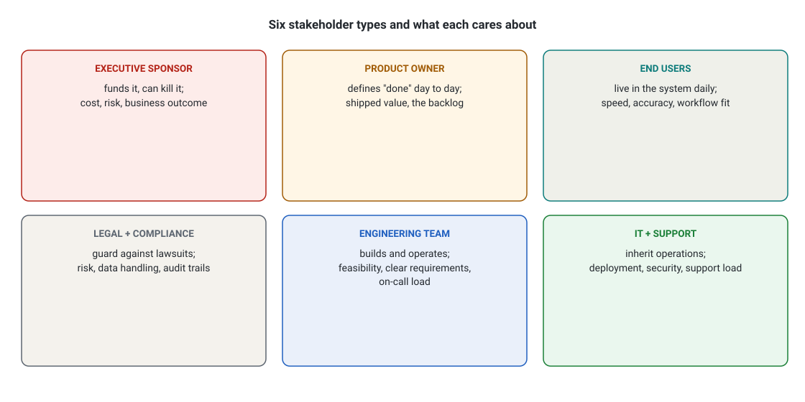
- Each card names one of the six stakeholder types and what it cares about. The executive sponsor cares about cost, risk, and business outcome. End users care about speed, accuracy, and workflow fit.
- Legal and compliance guard against lawsuits; the engineering team cares about feasibility and on-call load; IT and support inherit operations.
- Takeaway: you cannot give all six equal time. The map in the next section decides how much of your week each one gets.
How it works under the hood: the map
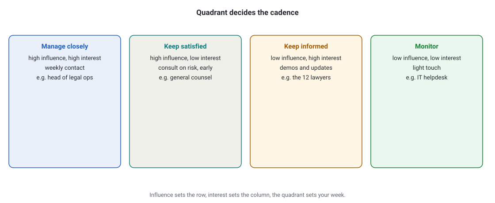
- Each panel names one quadrant and its cadence.
- High influence with low interest means consult on risk, early.
- Takeaway: never give all four quadrants the same meeting.
Rung 2: one level deeper. You cannot give all six equal time, so you sort them on two axes. Influence is how much power they have over the project: can they fund it, block it, or kill it? Interest is how much they care day to day: do they live in the system or just sign the checks? The combination puts each stakeholder in one quadrant, and the quadrant decides your cadence with them:
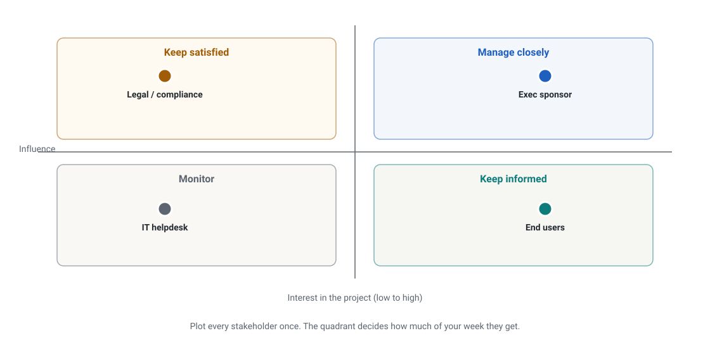
Follow the flow
- Horizontal axis is interest in the project, vertical axis is influence over it.
- Top right is manage closely: the executive sponsor, weekly contact.
- Top left is keep satisfied: legal and compliance, consulted on risk, not drowned in detail.
- Bottom right is keep informed: end users, demos and updates. Bottom left is monitor: helpdesk, light touch.
Each part, and what breaks without it
| Part | What it does | Why it exists | If you remove it |
|---|---|---|---|
| Manage closely | High influence, high interest | They can fund or kill the project | The sponsor is surprised at the worst moment |
| Keep satisfied | High influence, low interest | They can block on risk grounds | Compliance vetoes at go-live |
| Keep informed | Low influence, high interest | They live with the system daily | Users reject a system they never saw |
| Monitor | Low influence, low interest | Cheap to keep in the loop | Small issues become surprises |
Rung 3: placing a real project on the map. Take the contract review assistant you will meet in Unit 2. The general counsel sits top-left (high influence over go-live, low day-to-day interest: keep satisfied, consult on risk, never drown in detail). The head of legal ops sits top-right (owns the eval set and the rollout: manage closely, weekly contact).
The 12 lawyers sit bottom-right (they use it every day: keep informed with demos and updates). The IT helpdesk sits bottom-left (monitor: light touch, but looped in before launch so the first ticket is not a surprise). Plot every stakeholder once, at kickoff, and re-plot when the project changes shape.
How they will ask this
Scenario shape: two weeks before go-live, the compliance officer blocks the rollout, and the case notes that nobody consulted them during the project. Or the monthly bill surprises the executive sponsor. The trap: a technical fix, like more training data, a better model, or more user training. None of those address a stakeholder who was never plotted. A second trap: treating every stakeholder the same, giving the helpdesk the same weekly briefing as the sponsor.
The tell: the right answer names the stakeholder's quadrant (influence versus interest). It puts the blocker in the keep-satisfied quadrant (high influence, low interest). It prescribes the missing cadence: consult early, consult on risk, never drown in detail.
Next: structured discovery and requirement gathering, turning stakeholder talk into written, measurable requirements.
Unit 2. Structured discovery and requirement gathering
Discovery is the interview before the design. Structured means you run it from a fixed checklist, not from vibes.
What it is
Rung 1: the one-paragraph version. Structured discovery is a planned series of conversations and document reviews that happens before any architecture is drawn. Requirement gathering is the output: a written, signed set of measurable requirements. "Structured" is the key word. An unstructured kickoff meeting produces a wish list. A structured discovery produces numbers, constraints, and named decision makers.
In plain terms: discovery is the phase where the architect learns the business problem, the constraints, and the data reality. A requirement is a single testable statement of what the system must do, like "extract the termination clause with at least 95% precision" (precision: the fraction of extracted items that are actually correct). Gathering is the disciplined process of turning conversations into those statements and getting stakeholders to sign them. Most failed AI projects do not fail on model quality. They fail because the team built the wrong thing, or built the right thing against the wrong definition of done. Discovery is the cheapest phase to fix a misunderstanding: every week you delay it multiplies the cost of being wrong.
One more reason, specific to this exam: stakeholders describe solutions, not problems. "We want RAG" is a solution. "Our analysts cannot find the right policy document and each search takes 20 minutes" is a problem. The architect's job in discovery is to refuse the premature solution and dig for the problem underneath.
5 buckets (60-min sessions) --> ONE signed requirements document --> architecture begins
success metrics | constraints | data reality | risk tolerance | decision rights
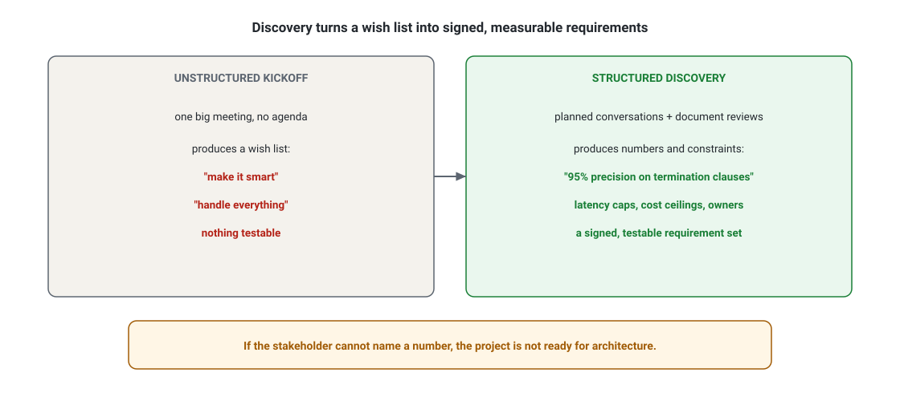
- The gray panel is the unstructured kickoff: one big meeting with no agenda that produces a wish list with nothing testable.
- The green panel is structured discovery: planned conversations and document reviews that produce numbers, constraints, and a signed, testable requirement set.
- Takeaway: if the stakeholder cannot name a number, the project is not ready for architecture.
How it works under the hood
Rung 2: one level deeper. Run discovery as short, focused sessions, one per stakeholder type. Sixty minutes each is enough. In each session you fill five buckets:
- 1. Success metrics
- How will we know this worked? Push for numbers with dates. If the stakeholder cannot name a number, the project is not ready for architecture. Example target: "cut average handle time from 8 minutes to 5 by Q2."
- 2. Constraints
- Latency caps, cost ceilings, compliance rules, deployment limits. Ask directly: "what is the maximum cost per request you can live with?" and "is there data that must never leave our network?"
- 3. Data reality
- What data actually exists, who owns it, how fresh it is, what shape it is in. Demo on real data as early as possible. Synthetic examples hide the mess that will break your system.
- 4. Risk tolerance
- What does a wrong answer cost? A wrong movie recommendation costs nothing. A wrong contract clause costs a lawsuit. The answer sets your whole quality bar and your human review budget.
- 5. Decision rights
- Who can sign off on scope, on the eval results, on go-live? Write the names down. "The team" is not a decision maker.
Two techniques make this work. First, ask "what does a bad day look like?" It surfaces failure modes that polite questions miss. Second, end every session with a one-page write-up and get an explicit signoff. A requirement nobody signed is a rumor.
How does AI discovery differ?
It is not different in spirit, but AI systems add two discovery questions that traditional software skips. One: what is the acceptable wrong-answer rate, stated as a number? Traditional software is deterministic, meaning the same input always gives the same output, so this question never comes up. Two: where does human judgment sit in the loop, and who pays for that labor? Every AI system that touches real decisions needs an answer to both before design starts.
Worked example: contract review assistant
Rung 3: the full climb. A legal team asks for "AI to speed up contract review." Discovery surfaces this:
| Bucket | What we learned |
|---|---|
| Success metrics | 800 contracts per month, 12 lawyers, current review 45 minutes each. Target: 10 minutes of lawyer time per contract within 6 months. |
| Constraints | Contracts are confidential and cannot leave the company network. Budget ceiling $8,000 per month for model calls. |
| Data reality | 2,400 past contracts with lawyer-marked clauses exist. Scanned PDFs, mixed quality. No clean labels for 2 of the 5 clause types. |
| Risk tolerance | A missed termination clause can cost six figures. Every AI-extracted clause gets a 2-minute lawyer check. Wrong answers are caught, but slow answers are not worth it. |
| Decision rights | The general counsel signs off on go-live. The head of legal ops owns the eval set (the fixed collection of test cases with known right answers used to measure the system). |
Those notes become signed requirements. Extract 5 clause types with at least 95% precision each. Keep p95 latency (the latency that 95% of requests beat; only 5% are slower) under 30 seconds. Cost at most $0.40 per contract. Route every output through the lawyer check queue. Deploy inside the company network.
Notice how each requirement traces back to one bucket.
How they will ask this
Scenario shape: a stakeholder request with no numbers. Four options: start with model selection, start with RAG design, run structured discovery workshops, or build a prototype immediately. The request: "our support team needs AI help, make it great." The trap: the prototype option feels fast and the model-selection option feels expert. Both skip the step that makes the rest work.
A second trap: "discovery means asking stakeholders what they want." Stakeholders describe what they want as solutions ("use the biggest model", "add a chatbot"). If you write those down as requirements, you become an order taker and you own the failure when the solution misses. Discovery means asking what problem they have, what it costs them today, and what "fixed" looks like in numbers. Then you choose the solution. The tell: look for the option that elicits success metrics and constraints before committing to any architecture.
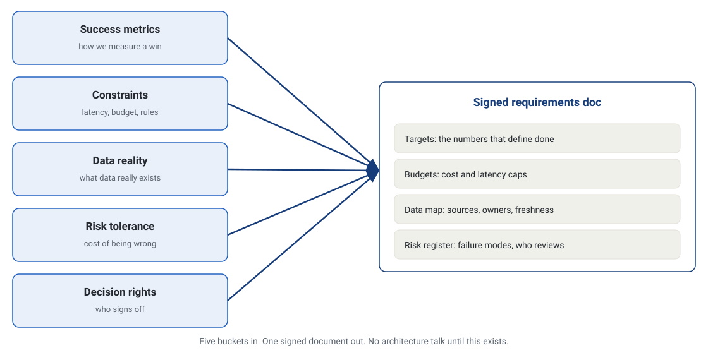
Follow the flow
- Start with the five buckets on the left: success metrics, constraints, data reality, risk tolerance, decision rights.
- Fill each bucket in a focused 60-minute session with the right stakeholder type.
- Follow the arrows right: every bucket contributes rows to the signed requirements document.
- Read the document's four parts: targets, budgets, data map, risk register.
- Sign this document before any architecture work starts.
Each part, and what breaks without it
| Part | What it does | Why it exists | If you remove it |
|---|---|---|---|
| Success metrics | Numbers that define done | Without them the project cannot be judged | You build the wrong thing and nobody can prove it |
| Constraints | Latency, budget, compliance caps | They rule out whole architectures early | You design something illegal or unaffordable |
| Data reality | What data exists and its shape | Demo on real data or inherit surprises | The system breaks on the messy real inputs |
| Risk tolerance | Cost of a wrong answer | Sets the quality bar and review budget | No safety net where one was needed |
| Decision rights | Named people who sign off | 'The team' cannot approve anything | Decisions stall or get reversed later |
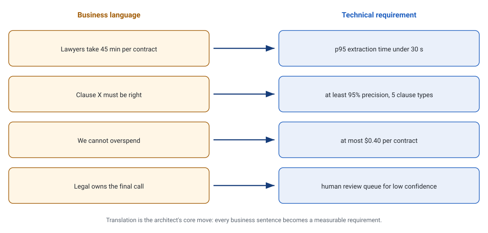
Follow the flow
- Read a business statement on the left, in the stakeholder's own words.
- Follow the arrow to the technical requirement on the right.
- Check that each requirement has a number: 30 seconds, 95%, $0.40, a named queue.
- A business sentence with no measurable translation is not a requirement yet.
Each part, and what breaks without it
| Part | What it does | Why it exists | If you remove it |
|---|---|---|---|
| Business language | What the stakeholder says | It carries the real need | You solve the stated solution instead of the problem |
| Arrow | The translation step | This is the architect's value-add | Vague wishes become vague systems |
| Technical requirement | A testable statement | It can be built and verified | No definition of done exists |
| Numbers | Every row has one | Numbers make promises checkable | Expectations drift silently |
Next: communicating architectural decisions and trade-offs, defending choices to people who do not read code.
Unit 3. Communicating architectural decisions and trade-offs
The architect's job is not to pick the best technology. It is to make the trade-offs visible so the business can choose knowingly.
What it is
Rung 1: the one-paragraph version. Communicating a decision means presenting it in terms the stakeholder can judge. A non-technical executive cannot judge "we will use a reranker over the top 50 chunks." Business language works better. "Option A costs three times more per request but halves the error rate. That saves an estimated $40,000 a month in rework."
In plain terms: a trade-off is a choice where improving one dimension costs you another: accuracy, latency, and cost are the classic three. Communicating it means laying out two or three real options side by side, in business terms. State your recommendation and the one fact that would change your mind. Two failure modes live here. The first is the black box decision: the architect picks a model and the stakeholder nods.
Six months later the bill arrives and nobody remembers agreeing to it. The second is the detail dump: the architect explains chunking strategies for twenty minutes. The executive quietly stops listening, then approves something they do not understand. Both end with misaligned expectations, and misaligned expectations are what D6 is testing.
There is also a risk argument. If you present one option, you own all the risk of that choice. If you present three options with honest trade-offs and the stakeholder picks, the risk is shared and documented. That is not politics. That is good engineering.
accuracy (top)
/\
/ \
/ A \
/______\
latency cost
(base corners: push toward one, the other two pull back)
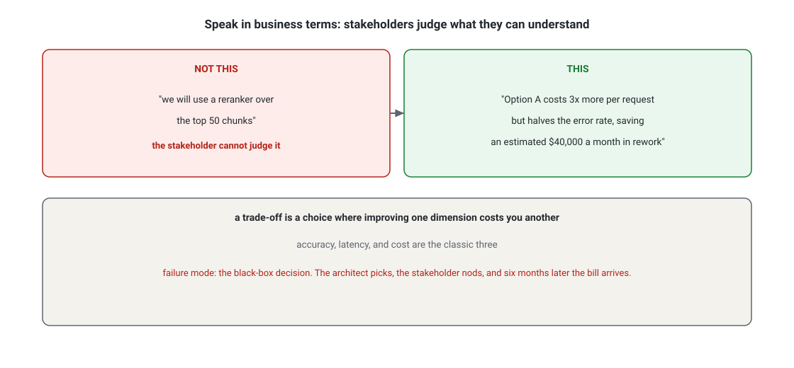
- The red panel is what not to say: a reranker over the top 50 chunks means nothing to a non-technical executive. The green panel is the same decision in business terms: costs three times more, halves the error rate, saves rework.
- Below: a trade-off is a choice where improving one dimension costs you another, and the black-box decision is the failure mode to avoid.
- Takeaway: present two or three real options side by side, in business terms, with your recommendation and the one fact that would change your mind.
How it works under the hood: the decision memo
Rung 2: one level deeper. Use the same four-part structure every time:
- Name the decision in one sentence. "Which model tier handles first-pass ticket classification?"
- Show two or three options as rows in one table. Columns are things the stakeholder cares about: cost per 1,000 requests, p95 latency, accuracy on our eval set, and risk. Never more than five columns. Never a column the stakeholder cannot interpret.
- Give your recommendation with reasons. "I recommend B, because it hits the latency budget with headroom and the accuracy gap to A is inside our human-review safety net."
- State the tripwire: what would change your mind. "If ticket volume triples, revisit: A becomes cheaper than the rework cost." This one sentence is what separates a senior architect from a confident guesser. It tells the stakeholder exactly when to come back to you.
The accuracy-latency-cost triangle is the mental model behind every such memo. You can push hard toward any one corner, but the other two pull back. A frontier model buys accuracy with money and time. A small fast model buys speed and cost with accuracy. There is no corner that wins all three. Anyone who promises one hides the trade-off.
Worked example with concrete numbers
Rung 3: the full climb. Ticket classification, 500,000 tickets per month, each about 800 input tokens and 50 output tokens. Illustrative pricing, rounded for the math:
| Option | Cost per 1k requests | Monthly cost | p95 latency | Accuracy on eval set |
|---|---|---|---|---|
| A: frontier model | $18 | $9,000 | 9 s | 97% |
| B: mid-tier model | $4 | $2,000 | 3 s | 94% |
| C: small model + rules | $0.80 | $400 | 1 s | 88% |
Now translate for the stakeholder: "Option A is the most accurate but costs $9,000 a month and keeps customers waiting 9 seconds. Option C is nearly free and instant. But 12% of tickets get misrouted and each misroute costs about $6 in agent rework. That is roughly $360,000 a month at our volume.
misroute_cost = tickets × misroute_rate × cost_per_misroute
where: tickets, tickets per month; misroute_rate, fraction routed wrong; cost_per_misroute, dollars of agent rework each.
Worked example (Option C above). 500,000 × 12% × $6 = $360,000 a month in rework. The cheap, instant option becomes the most expensive one once you price in the error rate. That is the arithmetic behind the recommendation for Option B. Fit the budget, answer in 3 seconds, and let the confidence-threshold review queue catch the 6% it misses.
I recommend B: it fits the budget, answers in 3 seconds, and the 6% it misses are caught by the confidence-threshold review queue (confidence: the model's own score for how sure it is). Revisit if volume passes 2 million tickets a month, because then A's accuracy starts paying for itself."
Notice what happened: the recommendation is one paragraph, every number traces to the table, and the tripwire names the exact condition for revisiting. That is the whole skill.
How they will ask this
Scenario shape: an executive asks which model to use for the support assistant. The case gives you cost, latency, and accuracy numbers for two tiers. The trap: an option picks the most accurate model "because quality matters most." It ignores the budget and the latency constraint from the case. A second trap: answering with a bare technology pick ("use the frontier model") or drowning the stakeholder in mechanism detail, or presenting one option as the only path. Also: "good communication means more technical detail."
More detail helps engineers; it hurts decision makers. The executive does not need to know what a reranker is. They need to know what each option costs, how fast it answers, how often it is wrong, and what you recommend. Detail that does not change the decision is noise. And presenting your favorite option alone "to keep it simple" removes the stakeholder's ability to judge and hands you all the risk. The tell: the right answer names the trade-off in the stakeholder's currency (cost per resolved ticket, wait time, error cost), recommends one option, and states what would change the call.
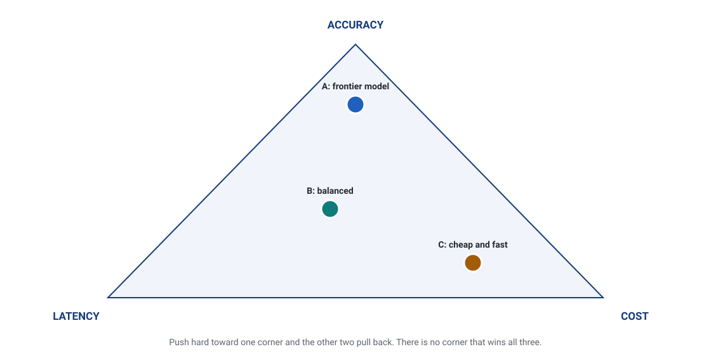
Follow the flow
- Read the three corners: accuracy at the top, latency and cost at the base.
- Find option A near the accuracy corner: frontier model, best answers, expensive and slow.
- Find option C near the latency-cost edge: cheap and fast, least accurate.
- Find option B in the middle: the balanced pick most systems land on.
Each part, and what breaks without it
| Part | What it does | Why it exists | If you remove it |
|---|---|---|---|
| Accuracy corner | How often the answer is right | The dimension stakeholders ask for first | Chasing it blindly blows the budget |
| Latency corner | How fast the answer arrives | Users feel every second | Ignoring it kills adoption |
| Cost corner | What each answer costs | Scale multiplies every cent | Ignoring it kills the project at volume |
| The triangle | You cannot win all three | Forces honest choices | Someone promises a free corner that does not exist |
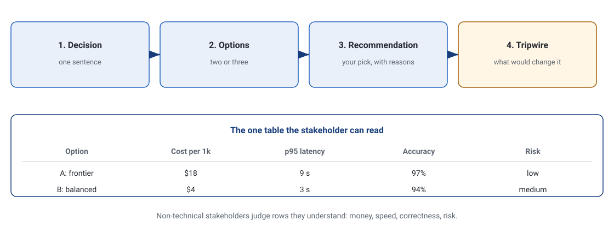
Follow the flow
- Step 1 names the decision in one sentence.
- Step 2 lays out two or three options as rows.
- Step 3 gives your recommendation with reasons tied to the table.
- Step 4 states the tripwire: the one fact that would change your mind.
- The table below uses only columns the stakeholder can judge: money, speed, correctness, risk.
Each part, and what breaks without it
| Part | What it does | Why it exists | If you remove it |
|---|---|---|---|
| Decision | One sentence naming the choice | Focuses the whole conversation | The meeting drifts across five topics |
| Options | Two or three real alternatives | Lets the stakeholder exercise judgment | One option means you own all the risk |
| Recommendation | Your pick, with reasons | Stakeholders pay for judgment | No recommendation is abdication |
| Tripwire | What would change your mind | Says exactly when to come back | The decision silently goes stale |
| The table | Business-unit columns only | Non-technical readers can decide | Mechanism detail they cannot judge |
Next: architecture documentation and implementation guidance, writing the guides a builder can actually build from.
Unit 4. Architecture documentation and implementation guidance
Teams forget why decisions were made. Documentation is how the architecture survives contact with the future.
What it is
Rung 1: the one-paragraph version. Architecture documentation has two parts. Decision records explain why: the context, the options, the choice, the consequences. Implementation guidance explains how. Give enough detail that an engineering team can build the system without you in the room. Do not give so much that the documents rot the moment code changes.
In plain terms: an ADR (architecture decision record) is a short, numbered document that captures one significant decision, in five parts: title, context, decision, consequences, and status. ADRs live with the code. Never delete them. Supersede them (do not edit them) when the decision changes. A runbook is the operational playbook: how to deploy, how to monitor, what to do when each alert fires.
Six months after launch, someone will propose "simplifying" the eval pipeline. They may propose swapping the reranker for a cheaper one. They may propose removing the human review queue to cut cost. Without a written record of why those pieces exist, each simplification looks reasonable in isolation and the system's quality dies by a thousand cuts.
The second reason is handoff: the architect rarely operates the system long term. Implementation guidance makes the handoff real instead of ceremonial. The team inherits more than diagrams. It inherits the eval set, the runbook, and the names of who owns what. The ADR is the institutional memory that says "we tried that, here is what happened, here is the number."
one decision --> ADR: title | context | decision | consequences | status
handoff package: diagram --> decision records --> eval set + runner --> runbook --> named owners
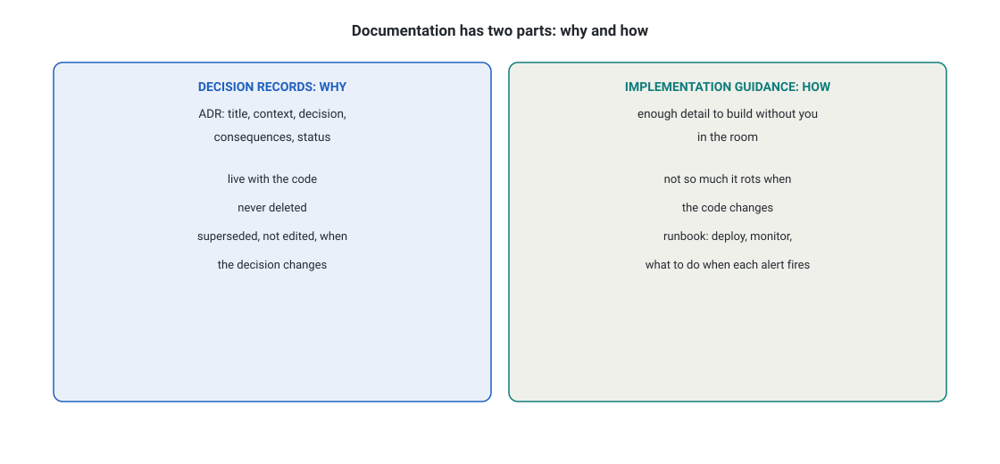
- The blue panel is decision records: ADRs in five parts, living with the code, never deleted, superseded rather than edited when the decision changes.
- The teal panel is implementation guidance: enough detail to build without you in the room, plus the runbook for deploy, monitor, and alerts.
- Takeaway: the why must survive the people; the how must survive the org chart.
How it works under the hood
Rung 2: one level deeper. The ADR format, the handoff package, and the guidance in between.
Writing an ADR. One decision per record, one page, written at decision time, not reconstructed later. The five parts:
- Title: "ADR-004: Retrieval with reranking instead of long-context stuffing." Numbered in order, so the sequence tells the story.
- Context: the problem and the forces. "Support articles average 40k tokens. Stuffing full articles into context costs $X per request at Y latency and buries the answer in noise."
- Decision: what you chose and what you rejected. A chunk is a piece of a document (a few hundred tokens) stored for retrieval. Reranking means scoring the retrieved chunks with a sharper second model and keeping only the best few. The call: "We retrieve the top 50 chunks and rerank to 8. We rejected full-context stuffing (too slow, too costly) and fine-tuning (data too thin)."
- Consequences: what gets better and what gets worse, honestly. "Better: 3x cheaper, 4x faster, accuracy up 2 points on the eval set. Worse: new failure mode when the retriever misses; mitigated by the fallback to full-article search on low confidence."
- Status: proposed, accepted, or superseded. When ADR-011 later replaces this decision, ADR-004 stays in the repo marked superseded, with a pointer. History is never rewritten.
The handoff package. Five items, in order, each with a named owner and a date:
- Architecture diagram: the current system map, boxes with opinions, data flowing in one direction.
- Decision records: the ADR sequence, so the team knows why each box looks the way it does.
- Eval set plus runner: the tests that prove the system works, with a one-command way to run them. This is the most skipped item and the most expensive to skip.
- Runbook: deploy steps, dashboards, and a playbook per alert ("if quality SLO breaches, do this first").
- Named owners: who owns the evals, who owns the prompts, who is on call. Names, not teams.
Implementation guidance sits between architecture and code: interface contracts, data schemas, the eval bar a change must clear before merging, and the explicit non-goals ("do not add new tools without an ADR"). It tells engineers where they have freedom and where they do not.
How much documentation is enough?
The test is simple: can a competent engineer who was not in the room make a safe change? If yes, you have enough. ADRs plus the handoff package pass that test at low maintenance cost because each ADR is one page and the eval set is executable truth. A 60-page architecture wiki fails the test: nobody reads it, so nobody trusts it, so it rots. Short, numbered, and next to the code beats long, pretty, and in a wiki.
Worked example: ADR-004 with numbers
Rung 3: the full climb. Context: 500,000 support tickets a month, each needing policy context. Two designs on the table. Full-article stuffing: average 40k input tokens per request. At an illustrative $3 per million tokens, that is $0.12 per request and $60,000 a month. p95 latency is 14 seconds.
Retrieval with rerank: 8 chunks at 500 tokens each plus overhead. That is about 6k tokens per request. It costs $0.018 per request and $9,000 a month. p95 latency is 3 seconds. Eval accuracy: 93% for stuffing, 95% for rerank on the 2,000-case golden set (a golden set: a hand-checked eval set treated as ground truth).
Decision: retrieval with rerank. Here are the consequences, stated honestly. We save roughly $51,000 a month and answer 4x faster with slightly better accuracy. We accept a new failure mode (retriever misses the right article). We mitigate it with a low-confidence fallback plus a weekly review of fallback cases. Status: accepted, signed by the product owner on the date in the record.
That ADR is why, a year later, nobody "simplifies" the system back to stuffing. The numbers are in the repo.
How they will ask this
Scenario shape: an engineering team inherited a Claude system six months ago and accuracy has drifted downward. Options include retraining, switching models, writing an ADR for the original choices, or establishing eval ownership with a weekly review. The traps: the technical fixes (new model, retraining) feel decisive but address no diagnosed cause. "Documentation means a comprehensive wiki page" is the other classic: comprehensive wikis are where decisions go to die. The exam's version is a handoff that looks complete on paper (diagrams, wiki links, a walkthrough meeting) but has no eval set, no runbook, and no named eval owner.
Quality then drifts silently because nobody owns the thing that would have caught it. The tell: the scenario never established who owns quality measurement. The right move restores the missing ownership and measurement first: assign the eval owner, reinstate the review cadence, diagnose the failing segment, then decide. The credited answer always includes the executable eval set and the named owner.
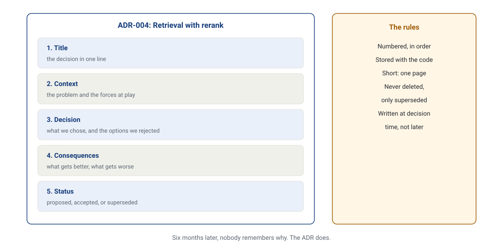
Follow the flow
- Band 1 is the title: the decision in one line, with its number.
- Band 2 is context: the problem and the forces that shaped the choice.
- Band 3 is the decision: what the team chose and what it rejected.
- Band 4 is consequences: what gets better and what gets worse, stated honestly.
- Band 5 is status: proposed, accepted, or superseded. The rules panel on the right says ADRs live with the code and are never deleted.
Each part, and what breaks without it
| Part | What it does | Why it exists | If you remove it |
|---|---|---|---|
| Title | The decision in one line | Findable later | Nobody can locate the decision |
| Context | Problem and forces | Explains why it was reasonable | Future readers judge with hindsight |
| Decision | Choice plus rejected options | Shows the road not taken | 'Simplifications' that repeat old mistakes |
| Consequences | Honest trade-offs | Prevents selective memory | Only the wins are remembered |
| Status | Proposed, accepted, superseded | History stays accurate | Edited history nobody trusts |
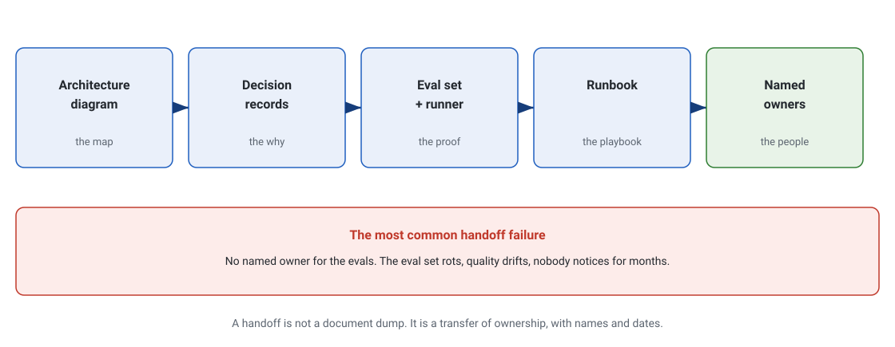
Follow the flow
- Follow the five boxes left to right: diagram, decision records, eval set with runner, runbook, named owners.
- Each box is a transfer: the team receives something they can use, not just read.
- Read the red strip: the most common failure is a handoff with no named owner for the evals.
- Without that owner the eval set rots, quality drifts, and nobody notices for months.
Each part, and what breaks without it
| Part | What it does | Why it exists | If you remove it |
|---|---|---|---|
| Architecture diagram | The system map | Shared mental model | Everyone holds a different picture |
| Decision records | Why each box exists | Stops repeated mistakes | Good decisions get 'simplified' away |
| Eval set + runner | Executable proof it works | Quality is checkable by anyone | Quality becomes unmeasurable |
| Runbook | Deploy and alert playbooks | On-call can act at 3am | Every incident is a fresh panic |
| Named owners | People, not teams | Someone is accountable | Diffusion of responsibility |
Next: feedback loops, expectation alignment, and SLAs, making promises in numbers both sides sign.
Unit 5. Feedback loops, expectation alignment, and SLAs
A promise you cannot measure is a wish. This unit is about writing honest, measurable promises for systems that are sometimes wrong.
What it is
Rung 1: the one-paragraph version. An SLA (service level agreement) is a contract about performance: what level the system will hit, over what time window, and what happens if it misses. Two companion terms: an SLI (service level indicator) is the thing you actually measure (for example, the fraction of successful requests), and an SLO (service level objective) is the target you set for it (for example, 99.9%).
The SLA is the contract that references the SLO and adds the remedy. A feedback loop is a scheduled checkpoint. Stakeholders see real performance data and adjust expectations or plans. Examples: weekly eval reviews with the product owner, monthly business reviews with executives.
The loop is what keeps the SLA honest after signing day. In plain terms, expectation alignment means the stakeholder's mental model of the system matches reality, on purpose and in writing. For AI systems the hardest part is probabilistic honesty. Say plainly, in the contract, that the system will sometimes be wrong. State how often, and what happens then.
AVAILABILITY SLA: "is it up?" || QUALITY SLA: "is it right?"
measured by uptime monitors || measured by humans grading samples
99.9% => ~43 min downtime/month || 95% => 50 wrong per 1,000 graded
(one never covers the other)
downtime = (1 − availability) × 43,200 min wrong_outputs = (1 − quality_rate) × graded
where: availability, the uptime fraction promised; 43,200, minutes in a 30-day month.
quality_rate, the fraction of outputs that pass human grading; graded, outputs graded per window.
Worked example. 99.9% availability: (1 − 0.999) × 43,200 = 43.2, about 43 minutes of downtime a month. Quality: 95% of 1,000 graded outputs pass, so 50 wrong outputs ship per window. The exam's point, stated in the diagram above: availability never covers quality.
Monitors measure one promise. Humans grading samples measure the other. A 99.9% uptime SLA says nothing about the 50 wrong answers.
The table above sets the vocabulary: monitors measure availability, humans measure quality. The next question is why the quality half needs a different kind of promise for LLM apps.
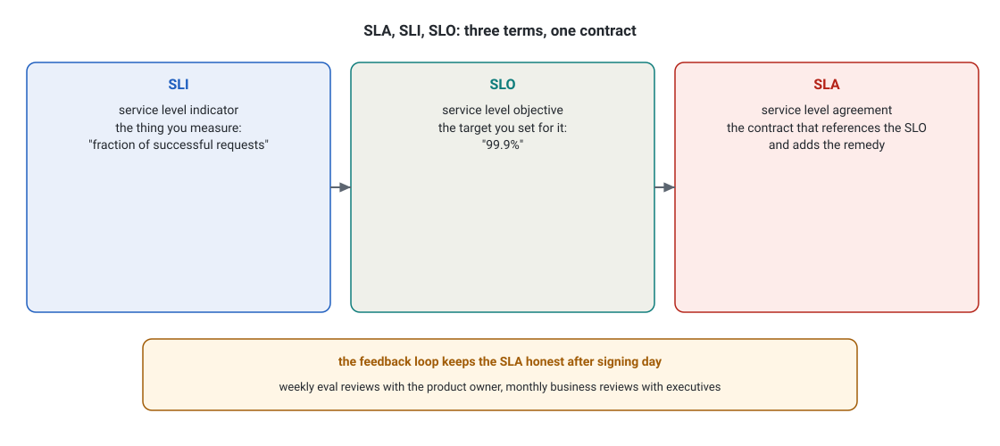
- Follow the arrows. The SLI is the thing you measure. The SLO is the target you set for it. The SLA is the contract that references the SLO and adds the remedy.
- The amber panel is the feedback loop: weekly eval reviews with the product owner and monthly business reviews with executives.
- Takeaway: the loop is what keeps the SLA honest after signing day.
Why SLAs mean something different for LLM apps
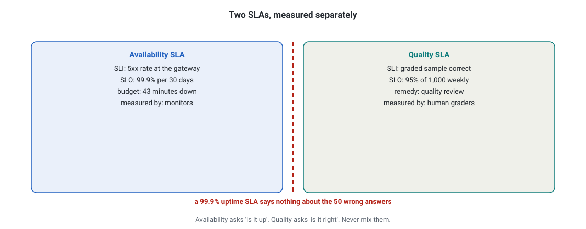
- The blue panel is availability. The teal panel is quality.
- Each names its SLI, SLO, and who measures it.
- Takeaway: a 99.9 percent uptime SLA says nothing about wrong answers.
Rung 2: one level deeper. Traditional software is deterministic: the same input always produces the same output. If the code is correct and the server is up, the answer is right. So one SLA, "the service responds correctly 99.9% of the time," covers everything.
An LLM is probabilistic: the same input can produce different outputs on different runs. Even a healthy, fast system gives wrong answers at some rate. That splits the promise in two:
- Availability SLA: "is it up?" The fraction of requests that get a successful response. Measured by uptime monitors. A 99.9% availability SLA over a 30-day month allows about 43 minutes of downtime. This says nothing about whether the answers were good.
- Quality SLA: "is it right?" The fraction of outputs that meet the quality bar. Measured by grading a sample of real outputs, usually by humans against a rubric, on a cadence like weekly. Example: "at least 95% of 1,000 weekly sampled outputs pass review."
You need both, written separately, measured separately. An availability SLA never covers quality. This is the single most tested idea in D6.
How it works under the hood
Rung 3: the full climb. Start with the availability SLA, then the quality SLA (the unfamiliar one), then the contract language and the feedback cadence.
Designing the availability SLA. Pick the SLI (successful responses divided by total requests), the window (usually 30 days), and the target. The target sets the error budget: the amount of failure the contract allows before consequences kick in.
| Availability target | Allowed downtime per 30 days | What it means in practice |
|---|---|---|
| 99% | 7 hours 12 min | One bad afternoon a month is fine. |
| 99.9% | 43 min | Tight but achievable with one region and retries. |
| 99.99% | 4 min 19 s | Needs multi-region failover and serious engineering. |
Each extra nine roughly multiplies the engineering cost. Never promise 99.99% because it sounds good. Promise the target your architecture can actually hold. Then write the remedy: service credits, a postmortem within 48 hours, and a reliability sprint if the budget burns two months running.
Designing the quality SLA. This is the unfamiliar one, so go slowly:
- Define the SLI. Three choices hide in the wording: sampling (you cannot grade everything), graders (humans, not vibes), rubric (written criteria, not gut feel). "Fraction of sampled outputs graded correct by two independent reviewers against the clause rubric."
- Set the SLO as a number with a window. "At least 95% correct per weekly sample of 1,000 outputs." The window matters. A bad day should not breach a monthly promise. A bad month should not hide inside a quarterly average.
- Name the measurement cost. Grading 1,000 outputs a week at 2 minutes each is about 33 reviewer hours. Put that labor in the budget during discovery (Unit 2), not as a surprise later.
- Write the remedy. A quality SLA without a remedy is a poster. Write it: "Two consecutive weeks below 93% triggers a quality review: pause feature work, diagnose the failing segment, and report to the product owner."
Probabilistic honesty, contractually. "The model is sometimes wrong" becomes contract language in three clauses. The acceptable wrong rate (the quality SLO). The safety net (which outputs get human review before they matter, for example everything below a confidence threshold plus a random 5% sample).
The drift clause (what happens when the measured rate degrades). Never let a stakeholder leave the room believing the system is always right. Correct that belief in the meeting, in writing, before signatures.
The feedback loop cadence. Match the loop to the stakeholder's quadrant (see Unit 1):
- Weekly: eval dashboard review with the product owner and the eval owner. Fifteen minutes. Red metrics get a named investigator.
- Monthly: business review with the executive sponsor. Cost, quality trend, and one upcoming decision.
- Quarterly: architecture revisit. New model releases, cost drift, and whether the original trade-offs still hold.
- Always: demo on real data early, by week two or three. Nothing aligns expectations faster than watching the system handle the stakeholder's own messy inputs.
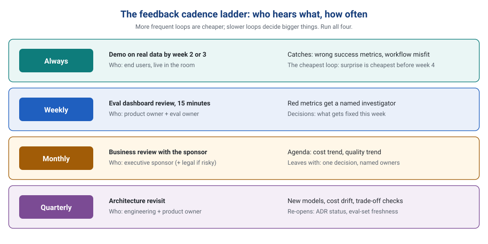
Read top to bottom. The top band is the most frequent loop, the bottom the slowest. Each band names who is in the room, what they see, and what leaves the room. Run all four at once: the fast loops catch cheap surprises, the slow loops decide expensive things.
| Component | What it is | Why it matters | What breaks if it is wrong |
|---|---|---|---|
| Always: demo on real data | Working demo by week 2 or 3 | Surprise is cheapest before week 4 | Wrong success metrics discovered at launch |
| Weekly: eval dashboard review | 15 minutes with product owner and eval owner | Red metrics get a named investigator | Decay hides until users complain |
| Monthly: business review | Cost and quality trend with the sponsor | Leaves with one decision and named owners | Budget drift discovered at quarter end |
| Quarterly: architecture revisit | New models, cost drift, trade-off checks | Decisions and eval sets stay fresh | The architecture silently goes stale |
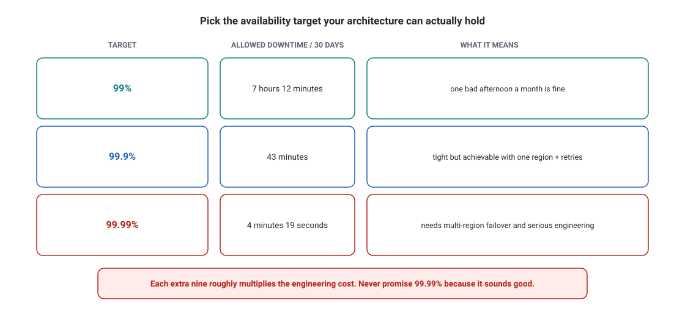
- Each row is one target. 99 percent allows one bad afternoon a month. 99.9 percent allows 43 minutes. 99.99 percent allows 4 minutes 19 seconds and needs multi-region failover.
- The target sets the error budget: the amount of failure allowed before consequences kick in.
- Takeaway: each extra nine roughly multiplies the engineering cost. Never promise 99.99 percent because it sounds good.
Worked example: the support assistant SLA
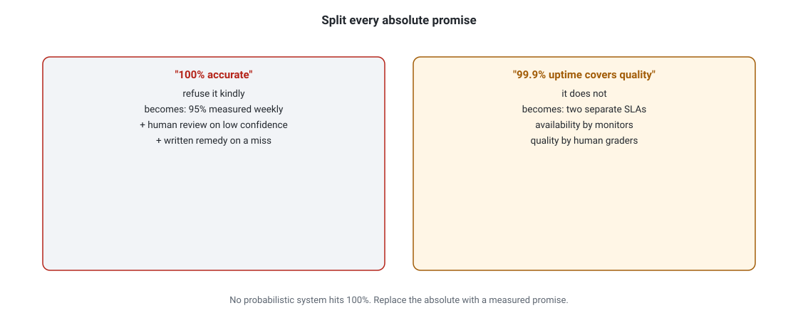
- Each panel takes one absolute promise apart.
- "100% accurate" becomes 95 percent measured weekly plus a safety net.
- Takeaway: refuse the absolute kindly, then replace it.
Rung 4: seeing it in one contract. Availability: 99.9% monthly, measured by the API gateway's 5xx rate (5xx: server-error responses). Error budget: 43 minutes. Remedy: 10% service credit per additional 43 minutes, postmortem within 48 hours.
Quality: at least 94% of weekly sampled responses graded "correct and safe" by reviewers, sample size 800. Two weeks below 92% triggers the quality review: feature work pauses, the failing segment (say, refund-policy questions) gets a dedicated fix, results reported to the product owner. Review labor: 800 outputs times 90 seconds is 20 reviewer hours per week, budgeted and staffed.
reviewer_hours = outputs × seconds_per_output / 3,600
where: outputs, outputs graded per week; seconds_per_output, grading time each.
Worked examples. 800 × 90 / 3,600 = 20 reviewer hours per week. 1,000 outputs at 2 minutes each: 1,000 × 120 / 3,600 ≈ 33.3 hours. Name the measurement cost in the budget during discovery (Unit 2). Do not surface it as a surprise later. Quality measurement means staffing, not a line item you wish into existence.
Notice the shape: every promise has a number, a window, a measurement method, and a remedy. If any of those four is missing, it is not an SLA.
How they will ask this
Scenario shape: a stakeholder demands 100% accuracy in the contract, or a vendor presents its 99.9% uptime SLA as proof the answers are reliable. Sometimes paired: "select two" items where one correct move is the quality SLA and the other is the human review safety net. The traps: accepting the 100%, or accepting the uptime number as covering correctness, or proposing an SLA with no measurement method. "Our availability SLA is 99.9%, so it covers quality" is the classic confusion. Availability measures whether the system answered, not whether the answer was right. A system can be up 100% of the month and wrong 20% of the time.
The correct move is to add the separate quality SLA with its own measurement plan. "Promising 100% accuracy to close the deal" feels helpful in the meeting and is poison in the contract. No probabilistic system hits 100% on real data, so refuse the number kindly and replace it. Say it like this: "we cannot promise 100%." Then replace it with a measured promise. Promise at least 95% measured weekly, with human review on every low-confidence output and a written remedy if you miss two weeks running. The tell: look for the answer that splits the promise in two, names the measurement plan and remedy for each half, and names the grader.
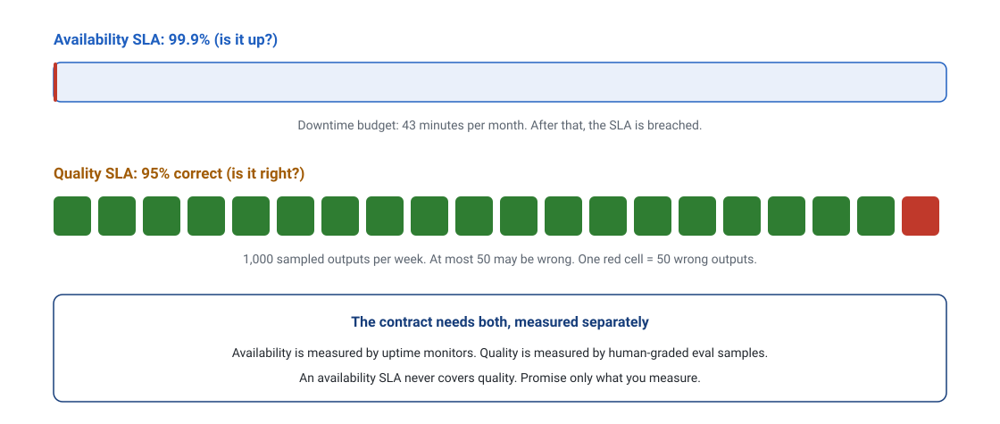
Follow the flow
- Top track: the availability SLA. The bar is one month; the red tip is the 43-minute downtime budget.
- Read the caption: after 43 minutes down, the downtime breaches the SLA. Monitors measure this.
- Bottom track: the quality SLA. Twenty cells stand for 1,000 graded outputs; one red cell is the 50 allowed wrong.
- Read the bottom box: the two promises need different metrics, different measurement, different owners.
Each part, and what breaks without it
| Part | What it does | Why it exists | If you remove it |
|---|---|---|---|
| Availability SLA | Fraction of successful responses | Proves the service answers | Downtime with no contract or remedy |
| Downtime budget | 43 min per month at 99.9% | Makes the target concrete | A percentage nobody can picture |
| Quality SLA | Fraction of outputs graded correct | Proves the answers are good | A fast, up, confidently wrong system |
| Human grading | Sampled outputs vs a rubric | The only honest quality metric | Vibes-based quality claims |
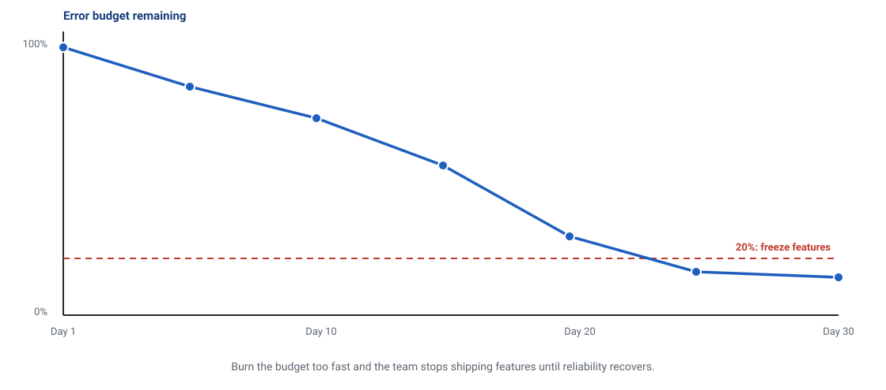
Follow the flow
- The vertical axis is budget remaining, from 100% at the top to 0% at the bottom.
- The blue line burns downward as incidents consume the budget across the month.
- The dashed red line at 20% is the policy tripwire.
- Crossing it freezes feature work: the team fixes reliability until the budget recovers.
Each part, and what breaks without it
| Part | What it does | Why it exists | If you remove it |
|---|---|---|---|
| Budget | Allowed failure for the window | Turns reliability into a number | Arguments about whether things are 'bad enough' |
| Burn line | How fast failure is consumed | Shows trouble weeks before the budget hits zero | Surprise breaches at month end |
| 20% tripwire | The freeze-features policy | Protects reliability automatically | Feature pressure burns the budget to zero |
| The freeze | Stop features, fix reliability | Prevents death spirals | Shipping features on a burning system |
Next: lifecycle management, handoff, monitoring, and iteration after launch.
Unit 6. Lifecycle management: handoff, monitoring, iteration
Handoff is not the end of the project. It is the middle. The system lives or dies on what happens after.
What it is
Rung 1: the one-paragraph version. The lifecycle has six phases: discover (learn the problem), design (choose the architecture), build (construct it), hand off (transfer ownership), monitor (watch it in production), iterate (improve it). Then the loop turns again. The steering wheel for the whole loop is the eval set from Unit 4. As you learned in D4, that eval set is the fixed collection of test cases with known right answers. The handoff is not done until someone owns it. Judge every iteration by measured results, not by opinions about what should work.
In plain terms: monitoring is the continuous collection of the four production signals: quality (is it still right?), latency (is it still fast?), cost (is it still affordable?), and safety (is anything harmful happening?). Iteration is the disciplined cycle of detecting a change in those signals, diagnosing the cause, fixing it, re-evaluating, and shipping. Lifecycle management means owning that cycle on purpose instead of reacting to user complaints. Production systems decay: data formats change, user behavior shifts, a new model version behaves slightly differently. Without a managed loop, the first sign of decay is an angry customer or a surprising bill, and by then the damage is weeks old.
With a managed loop, the eval dashboard shows the dip on Tuesday, the owner investigates on Wednesday, and the fix ships before most users notice. The deeper reason: an AI system is never "done" the way a bridge is done. Its environment (data, users, models, costs) keeps moving. Lifecycle management is the admission that launch day is a starting line, written into roles, dashboards, and calendars.
discover --> design --> build
^ |
| hand off
| v
iterate <-- monitor <-- (four signals: quality, latency, cost, safety)
(evals hub at the center: every phase checks measured results)
How it works under the hood
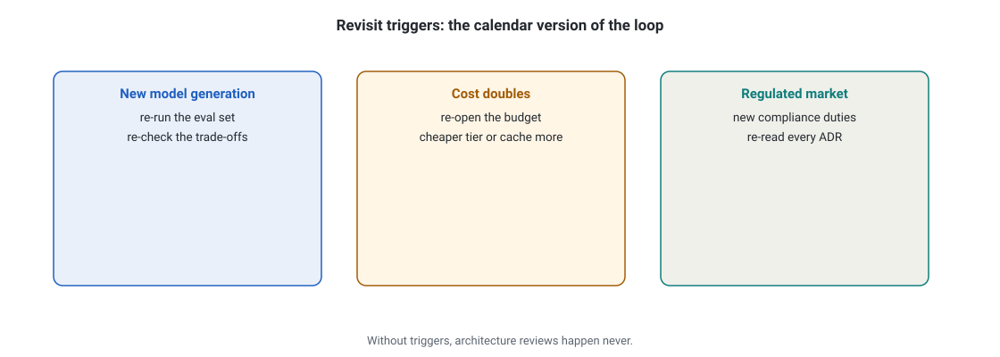
- Each panel names one event that forces a review.
- Reviews happen on the calendar, not on feelings.
- Takeaway: without triggers, reviews happen never.
Rung 2: one level deeper. The four signals, each with an owner and a threshold:
| Signal | What you watch | Example threshold |
|---|---|---|
| Quality | Weekly graded sample pass rate | Below 93% two weeks running triggers review |
| Latency | p95 response time | Above 5 s for one hour pages the on-call |
| Cost | Spend per 1,000 requests | 20% above budget for a week triggers investigation |
| Safety | Blocked or flagged outputs, user reports | Any novel jailbreak pattern triggers same-day review |
The iteration loop, step by step:
Rung 3: the full climb. Five steps, always in this order:
- Detect: a signal crosses its threshold. The dashboard, not a human, finds it.
- Diagnose the segment: quality dropped from 96% to 91%. On which segment? Refund questions, after the team reformatted the policy PDF. Aggregate numbers hide this; per-segment evals reveal it. Never skip diagnosis.
- Fix narrowly: update the chunking for the new PDF layout, or add the missing examples to the prompt. One change at a time.
- Re-evaluate: run the full eval set, including the regression cases. A fix that heals one segment and breaks another is not a fix.
- Ship and watch: deploy, then watch the signal for a full cycle before declaring victory.
Revisit triggers are the calendar version of the loop: events that force an architecture review whether or not a signal fired. A new model generation ships. Cost doubles. The business enters a regulated market. The original ADRs get re-read and either reaffirmed or superseded. Without triggers, architecture reviews happen never.
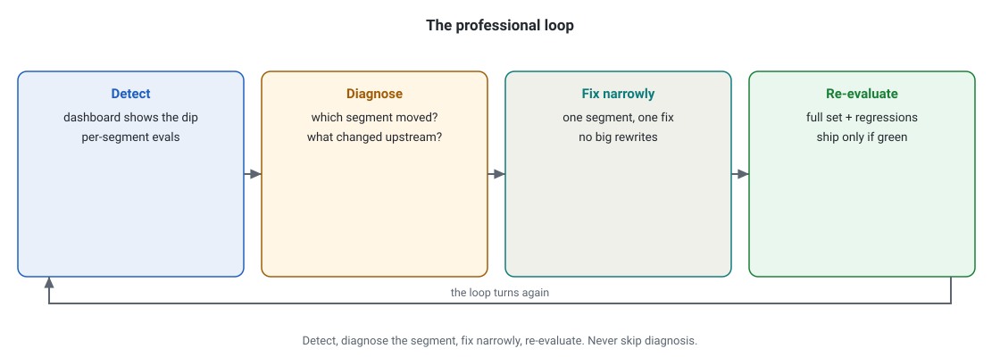
- Follow the arrows left to right, then back to the start.
- Diagnosis names the segment before any fix.
- Takeaway: never skip diagnosis.
Worked example: the drift that got caught
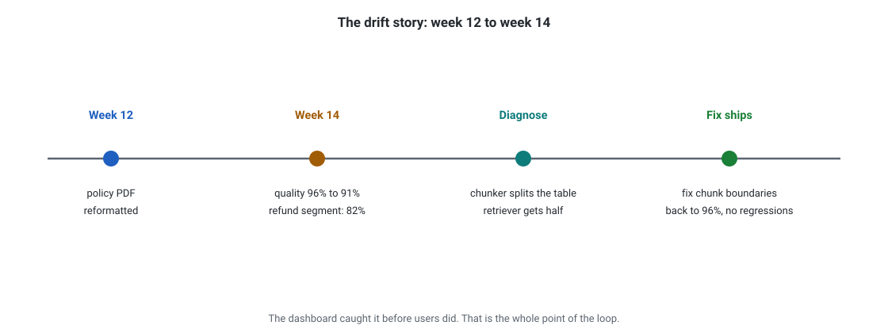
- Follow the timeline left to right.
- Week 14 shows the dip. Diagnosis finds the split table.
- Takeaway: the dashboard caught it before users did.
Rung 4: seeing it in one story. Week 14 after launch. The weekly graded sample shows quality at 91%, down from a steady 96%. Per-segment breakdown: refund-policy questions fell from 97% to 82%; everything else is flat.
Diagnosis: the company reformatted its refund policy PDF in week 12. The chunker now splits the key table across two chunks. So the retriever returns half the rule.
Fix: adjust chunk boundaries for table-heavy documents and add 40 refund cases to the golden set. Re-evaluation: full set passes at 96%, refund segment back at 96%, no regressions elsewhere. The fix ships in the normal release train. Total user-visible impact: near zero, because the loop caught it in the dashboard instead of in the support inbox.
Now the counterfactual the exam loves: the same drift with no eval owner and no weekly review. The first signal is a spike in refund complaints in week 20. Diagnosis starts from angry tickets instead of clean data. The fix takes three weeks instead of three days. That gap is what lifecycle management buys.
How they will ask this
Scenario shape: three months after launch, users report worse answers on a specific topic. Options: switch to the newest model, add more training data, diagnose the failing segment from the eval dashboard, or roll back to the launch-day prompt. The traps: the newest model feels like progress; the rollback feels safe. Both skip diagnosis.
"Monitoring means watching uptime and error rates" is the infrastructure-only trap: uptime and error rates are the availability half. For an AI system the dangerous decay is silent: the service is up, the responses are fast, and the answers are slowly getting worse. Quality monitoring (the graded sample) and cost monitoring (spend per request) are what catch the failures that uptime dashboards miss.
"When quality drops, switch to a bigger model" is the guess-not-diagnosis trap: a bigger model is a guess, not a diagnosis. Maybe the data changed, maybe the prompt regressed, maybe one segment broke. The professional loop is detect, diagnose the segment, fix narrowly, re-evaluate.
Model switching is what you do after diagnosis says the current tier cannot hit the bar, and then you write the ADR for it. The tell: the right answer starts with measurement (what do the evals say, which segment moved) and only then chooses a fix. If an option mentions per-segment evals, it is usually the credited one. Also watch for the "handoff is the end" framing: any option that treats go-live as the finish line is wrong.
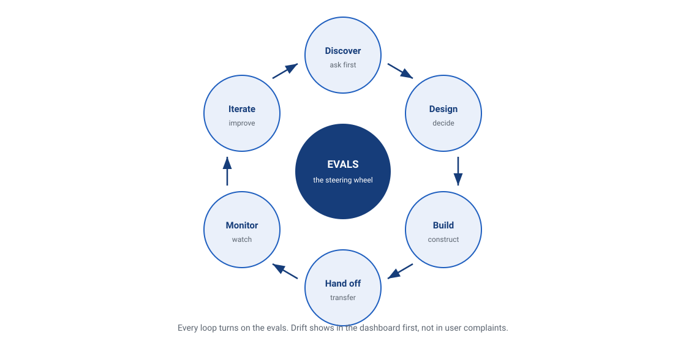
Follow the flow
- Start at the top with Discover and move clockwise: design, build, hand off, monitor, iterate.
- Each phase feeds the next; the arrows show the loop never ends at handoff.
- The dark hub in the center is the evals: every phase checks against measured results.
- Read the caption: drift appears in the dashboard first, in user complaints last.
Each part, and what breaks without it
| Part | What it does | Why it exists | If you remove it |
|---|---|---|---|
| Discover | Learn the problem | Builds the right thing | Elegant solutions to wrong problems |
| Design | Choose the architecture | Trade-offs made deliberately | Accidental architecture |
| Build | Construct the system | Turns decisions into software | Nothing to hand off |
| Hand off | Transfer ownership | The team can run it alone | Architect as permanent bottleneck |
| Monitor | Watch the four signals | Catches decay early | Decay found by angry users |
| Iterate | Fix, re-evaluate, ship | Compounds improvements | Launch-and-abandon |
| Evals hub | The steering wheel | Every loop turns on measurement | Opinions steer instead of data |
Next: the D6 exam tactics, the patterns that turn every D6 scenario into a checkable answer.
D6 exam tactics
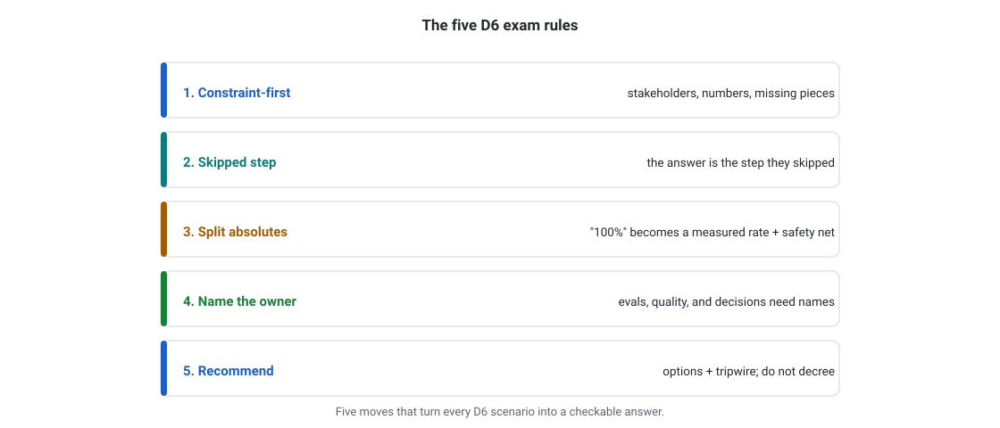
- Each row is one rule.
- Read them top to bottom before exam day.
- Takeaway: five moves cover every D6 scenario.
Six units of people-work are behind you. You know who the stakeholders are, how to discover what they need, and how to defend decisions. You know how to document them, how to promise in numbers, and how to keep the system alive after launch. This section compresses all of it into the tactics that turn D6 scenarios into checkable answers.
Five rules that answer most D6 questions.
- Constraint-first reading. Before looking at the options, write down the stakeholders, the numbers, and the missing pieces. The trap option almost always ignores one of them.
- The skipped step is the answer. Discovery before architecture. Measurement before promises. Diagnosis before fixes. Ownership before handoff.
- Split every absolute promise. "100% accurate" becomes a measured quality rate with a safety net. "99.9% uptime" never covers correctness.
- Name the owner. If the scenario has drifting quality and no named eval owner, the answer creates one. Metrics without owners are decorations.
- Recommend, do not decree. Show options in business terms, recommend one, state the tripwire. That is the senior architect's voice the exam rewards.
This study guide built all figures in this volume from first principles (no external image sources applied to these abstract process concepts). Cost and pricing numbers are illustrative, rounded for teaching the math, not quotes.
Last verified against official Anthropic sources: September 2026.
You now own the people side of AI systems: stakeholders, discovery, decision memos, documentation, SLAs, and the lifecycle. The track continues with D7 · Developer Productivity & Enablement (7%), where the system you shipped becomes the platform other engineers build on.